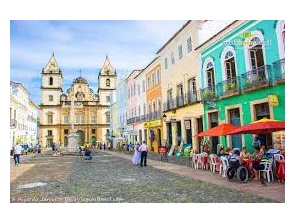
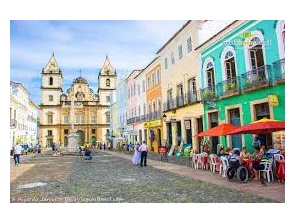

| Breathtaking Places around Salvador! |
   The São Francisco Church and Convent of Salvador is in the State of Bahia, Brazil. The convent and its church are important
colonial monuments in Brazil. |
   The Historic Center or Centre of Salvador de Bahia in Brazil, also known as the Pelourinho or Pelo, is a historic neighborhood in western Salvador, Bahia. The Historic Center is extremely rich in historical monuments dating from the 17th through the 19th centuries, consisting of extremely stunning architectural creations. |